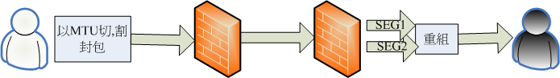
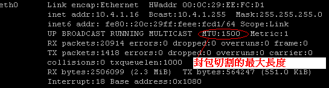
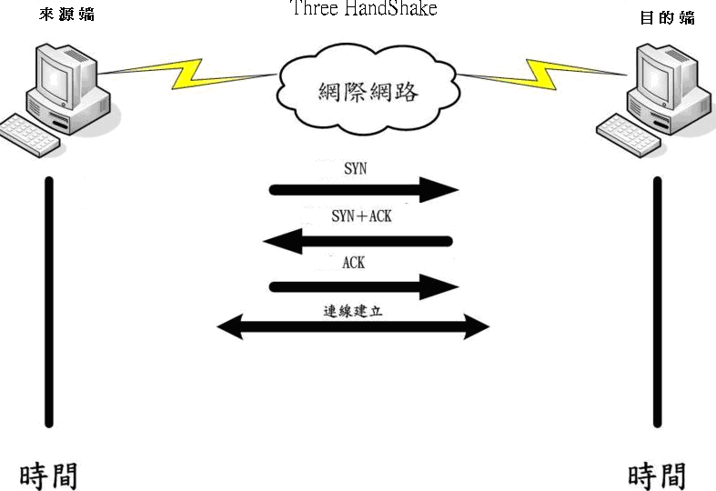
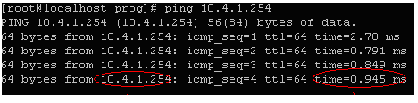
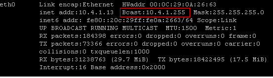
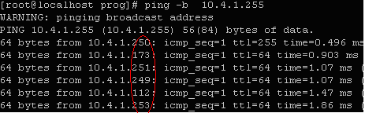
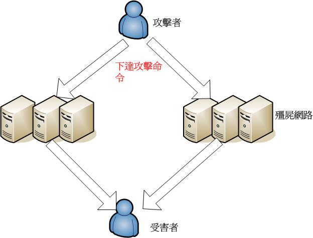

以 mod_evasive 阻擋 D.o.S 攻擊

前言
相信曾經架設過網站（尤其是小有名氣的網站）的讀者，都曾有過這種不愉快的經驗，也不知道招誰惹誰了，常常在短時間內遭受到大量使用者的連線請求，如果網站未做好適當的防護，常常就反應不及而當掉，此種的攻擊模式，稱為拒絕服務攻擊（Denial of service，簡稱為 D.o.S），在本文中，筆者將介紹 mod_evasive 模組，這是最有名的網站伺服器 apache 所支援的模組，主要功能即是用來阻檔拒絕服務攻擊。所需的套件如下：Apache 2.2.16（官方網址為：https://httpd.apache.org/）
mod_evasive（下載位址為：https://www.zdziarski.com/blog/wp-content/uploads/2010/02/mod_evasive_1.10.1.tar.gz）
什麼是拒絕服務攻擊（Denial of service ，簡稱為 D.o.S）
如果我們將網路視為一條高速公路，車流量在短時間內大量的擁上公路，而由於先天的設計不良，當公路負荷不了時會讓所有的車輛卡在公路上而動彈不得。拒絕服務攻擊即是使用類似的概念，由於通訊協定設計上的瑕疵，允許在短時間內可發出大量的封包來攻擊某個受害主機，直至該主機因無法有效處理而停擺。以下我們就來說明拒絕服務攻擊的攻擊型式。TearDrop
當封包資料在網路上傳輸時，會根據 MTU (Maximum Transmission Unit)，來設定最大的切割長度並紀錄被切割封包的位移值 (Offset)，當封包到達目地端後，目的主機利用位移值 (Offset) 來重組封包以復原資料。如下圖示：
TearDrop 攻擊則是利用 IP 封包重組的漏洞。攻擊者先假造含有不正確位移值的封包，當這些封包到達目的主機後，可能會在重組的過程中，因為無法處理不正確的位移值 (Offset)，而可能造成一些系統當機。
在 linux 系統下，讀者可利用 ifconfig 指令來查詢 MTU 資訊，如下圖示（每個片段會是 1500）：

Land 攻擊
在 TCP/IP 協定的定義中，IP 封包的來源位址可自行定義（不一定為有效位址，可假造任何的來源 IP），land 攻擊即是利用此種特性，利用 IP Spoofing（IP 欺騙）的技術，將 SYN 封包的來源位址與目的位址設定為相同位址。當目的位址接收到此類封包後根據 three-way handshake 動作，它會回應 SYN-ACK 封包給來源位址，由於來源位址與目的位址相同，所以受害主機會回應 ack 封包，而在受害主機上建立空連接。在大量的 land 攻擊下，會建立大量的空連接，將受害端主機的資源消耗殆盡。SYN Flood 攻擊
TCP 採三向式握手 (three-way handshake) 以建立連線（如下圖示）：
SYN Flood 攻擊即利用上述第三步驟，在接受目的端的 SYN-ACK 封包後，並不回應 ACK 封包來建立連線。如此可迫使受害者主機端需維護一份非常大的半連接列表，而被害主機將會因需耗費大量的主機資源來維護此份半連接列表。而可能造成受害者主機因資源耗盡而中止服務。
利用 ICMP 封包的攻擊
ICMP (Internet Control Message Protocol) 是一種「錯誤偵測與回報機制」，主要目的在於偵測遠方主機是否存在。如我們常用的 ping 指令即是使用 ICMP 協定。如下圖示：（代表 10.4.1.254 仍是存活狀態）
在每個網域中均會有一個廣播位址，在 linux 系統下可利用 ifconfig 取得相關資訊，如下圖示：

我們 ping 廣播位址（如上圖的 10.4.1.255），則所有在網域中仍存活的主機均會回應給來源位址。如下圖所示：

由於 ICMP 強調的是「偵測」與「回報」，偵測只需送出少許的封包，而 ICMP 回報封包卻可能回覆大量的封包（如上例的廣播），利用 ICMP 通訊協定特性來攻擊，可分為下列幾種攻擊：
1.Smurf 攻擊
利用廣播的特性，假造一個 ICMP 的封包（來源位址為受害者的 IP 位址），而目的位址為該網域的廣播位址。當該封包送往網域的廣播位址後（上例為 10.4.1.255），該網域所有仍存活的主機即會回應封包給 ICMP 封包的來源位址（受害者的 IP），即可能使受害者的 IP 在短時間內無法承受這麼大的網路流量而癱瘓掉。從另一角度來看，由於網域內充滿了回應的封包，也可能造成該網路擁塞的情況發生。此種攻擊可怕的地方，在於可利用少量的網路封包（難以被網管人員察覺）即可瞬間創造出極大量的封包流。舉例來說，假設目標網段中有 200 台電腦，攻擊者只需要送出 10K bps 的 ICMP 封包流至該網段的廣播 (broadcast) 位址的，即可能瞬間產生高達 20 Mbps 的資料量回傳到受害者的主機上，即使受害者主機有再大的頻寬，Smurf 攻擊都可以輕易地耗盡這樣的頻寬資源。除此之外，由於此種攻擊手法是以 ICMP 通訊協定來完成，而 ICMP 通訊協定又常被大眾所忽略，也因此成為安全上的一大漏洞。
2.Ping of Death
根據 TCP/IP 的規範，一個封包的最大長度為 65536 位元組。但儘管一個封包的長度不能超過 65536 位元組，可是 TCP/IP 並未規範經切割 (Fragment) 後的封包，至目的機器重組時的長度不能超過 65536 位元組。Ping of Death 即是利用傳送超過 65536 位元組的 ICMP 封包至受害者主機；由於封包最大僅可容許 65536 位元組；當受害者主機接收並重組此超過 65536 位元組，即可能造成系統因無法處理此類封包而當機。上述的 D.o.S 攻擊都是用單一主機發送大量的偽造封包來攻擊受害者主機，因此很容易被發現並且單一機器效能不足，無法達到 D.o.S 的目標，所以在實務上均是採用 DDoS (Distributed Denial of Service) 攻擊，稱分散式阻絕服務攻擊。基本上，DDoS 攻擊是 DoS 攻擊方式的一種變形，它首先利用許多已知系統的安全漏洞或誘使系統管理者執行木馬程式等方式，來入侵系統並取得管理者權限後（此時被入侵主機即稱為 bot 主機），執行特定的程式，等待攻擊者的連線，當攻擊者攻克多台主機後，它會將這些被攻破的主機組成攻擊大軍，在同一時間同時攻擊某一台受害者主機。並造成該主機無法正常運作。如下圖示：

mod_evasive簡介
mod_evasive 是 apache 的 3rd party 模組，apache 官方並未提供相關的模組。mod_evasive 主要的防治原理是利用一個 HASH TABLE 的資料結構來儲存相的 HTTP 要求 (Request)，而後利用下列規則來決定是否要拒絕對方的連線。
＊在一定的時間區間內，同一個來源的 IP 是否存取同一個頁面是否超過所設定的次數。（如設定同一個 IP 在同一個頁面中，5 秒內僅能存取 10 次，超過此次數時會拒絕該來源 IP 的連線）
＊在一定的時間區間內，限制同一個來源的 IP 最大的 HTTP 存取數量。
由上述的說明，我們可以知道 mod_evasive 主要是利用限定來源的 HTTP 存取方式來避免遭受到拒絕服務攻擊。
安裝 mod_evasive
首先請讀者先行取得最新的 mod_evasive 原始碼（筆者取得的版本為 1.10.1），請至下列網址取得：wget https://www.zdziarski.com/blog/wp-content/uploads/2010/02/mod_evasive_1.10.1.tar.gz
下載並解壓縮後，編譯 mod_evasive 的過程很簡單（在這邊假設讀者已成功安裝了 apache 2.2.16 版本，安裝路徑為 /usr/local/apache22/），執行下列指令 /usr/local/apache22/bin/apxs -i -a -c mod_evasive20.c #以Apache的apxs 來編譯 apache 的模組，其中「-i」表示編譯完成後要直接安裝該模組，「-c」即為編譯。假如編譯成功會將 mod_evasive20 安裝到 /usr/local/apache22/modules 目錄，讀者可查看在 /usr/local/apache22/modules 目錄下是否有 mod_evasive20.so 檔案。接下來我們繼續來說明 mod_evasive 所提供的參數，說明如下：
＊DOSHashTableSize
設定處理記憶體的大小，即是儲存 mod_evasive HASH 資料值的地方，DOSHashTableSize 的大小，需根據網站流量狀況來設定，數字越大表示處理越快，所以當網站流量越大，此值就需要越大。
＊DOSPageCount
設定在某個時間區段中，同一個來源 IP 存取同一個頁面的最大存取次數，假如在該時間區段中超過所設定的次數，mod_evasive 即會發出 403(Forbiden) 來中斷該來源 IP 的存取。時間區段的長短可以在 DOSPageInterval 中設定。
＊DOSSiteCount
設定在某個時間區段中，同一個來源 IP 可同時發出 HTTP 存取的最大次數，假如在該時間區段中超過所設定的次數，mod_evasive即會發出 403(Forbiden) 來中斷該來源 IP 的存取。時間區段的長短可以在 DOSSiteInterval 中設定。
＊DOSPageInterval
設定 DOSPageCount 的時間區段，單位為秒，如果沒設定此值，預設為一秒。
＊DOSSiteInterval
設定 DOSSiteCount 的時間區段，單位為秒，如果沒設定此值，預設為一秒。
＊DOSBlockingPeriod
當發現有疑似攻擊（超過上述所設定的最大次數）時，需暫時停止對方存取的時間，如果沒設定此值，預設為 10 秒，在這段時間內，使用者會接收到 403 (Forbidden) 的訊息。
＊DOSmailNotify
設定管理者的 Email 位址，當系統有疑似被攻擊時，即會寄發警告信至管理者的信箱中。
＊DOSSystemCommand
當發現有疑似攻擊，即需自動執行的指令。Ex:DOSSystemCommand “/bin/mail -t %s （%s指的是 DOSEmailNotify設定的email address）”
＊DOSLogdir
設定 mod_evasive 的記錄檔位置，如果沒設定此值，預設存放 log 的目錄為 /tmp。當 mod_evasive 發現有疑似攻擊時，會在該目錄下新增一個 dos_[ip] 的檔案，讀者可查看目錄下的相關檔案即可得知攻擊的惡意來源 IP。
系統設定
在使用 mod_evasive 之前，我們必須先設定相關的設定在 /usr/local/apache22/conf/httpd.conf，新增下列相關參數 LoadModule evasive20_module modules/mod_evasive20.so #設定使用 evasive20_module 的模組。＜ifmodule dosevasive22_module＞
DOSHashTableSize 3097
DOSPageCount 2
DOSSiteCount 50
DOSPageInterval 1
DOSSiteInterval 1
DOSBlockingPeriod 10
＜/ifmodule＞
DOSmailNotify #設定當發現疑似攻擊時的，要寄發管理者的電子郵件信箱
DOSLogdir /tmp #設定LOG檔案儲存的目錄位置。在設定完成後，讀者利用 apachectl start 即可重新啟動 apache。
mod_evasive 提供了一支 test.pl 的測試程式，讀者可執行 perl test.pl 來測試 mod_evasive 是否有正常的運作（如果設定正常 perl.pl 會回傳 403 forbiden 等相關的訊息），mod_evasive 模組已經提供了充足的預防拒絕服務攻擊的機制。